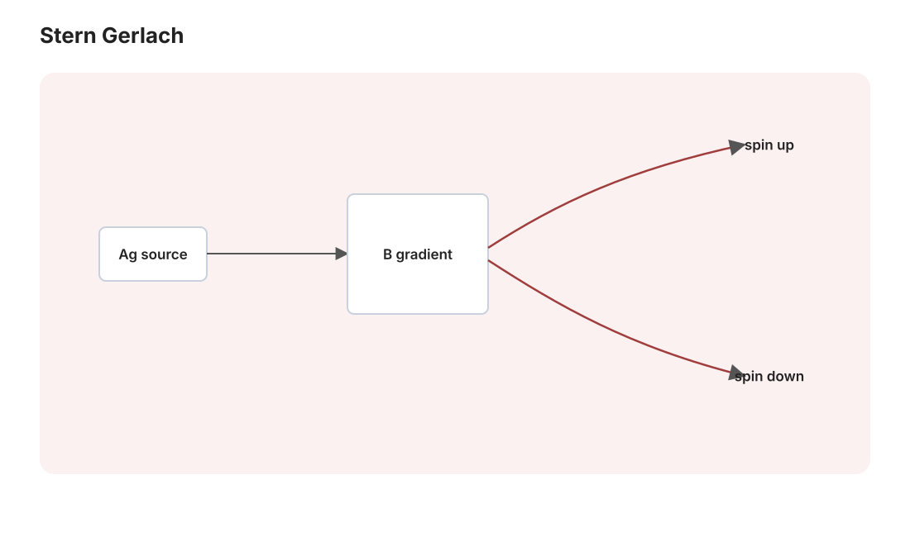

本页目录
量子 I · 波函数与基本框架
对标：Griffiths QM §1–3 ｜ 前置：泛函 II（Hilbert 空间——量子力学的数学就是它）、em-03（经典原子之死）、概率线 量子力学的公理体系一页立齐：态 = Hilbert 空间矢量、观测量 = 自伴算符、测量 = 谱投影 + Born 概率、演化 = Schrödinger 方程。你的泛函分析在此整体变现——量子力学是 Hilbert 空间理论的物理实例化。
学习层：从 Stern–Gerlach 的两束光斑到投影测量
1. 具体情境：第二块磁铁会给出什么？
Stern–Gerlach 装置把银原子束送入非均匀磁场；磁矩与场梯度的相互作用把束流分成两个可分辨的空间通道。把其中一个通道选出来，就得到一个可重复制备的二能级输入，例如记作 \(\lvert +z\rangle\)。现在把第二块分析器绕 \(y\) 轴转到方向 \(\mathbf n(\theta_m)\)：它仍然只有两个输出，记为“\(+\)”与“\(-\)”。
这里的箭头是 Bloch 球上对量子态/分析器的参数化，不是说原子在测量前已经带着一个等待被相机揭示的经典自旋方向。实验要比较的是许多同样制备的原子在两个输出通道的计数比例。
2. 先预测：在打开实验前写下四个比例
先不拖动下面的实验台，预测：
- \(+z\) 输入送入 \(z\) 分析器，会不会全走“\(+\)”通道？
- 同一个输入改送入 \(x\) 分析器，两个通道各占多少？
- \(-z\) 输入再测 \(z\)，结果是否与 \(+z\) 相反？
- 对 \(+z\) 先选择 \(+x\)，再把分析器转回 \(z\)，第二次还会不会确定？
不要把“同一次原子先后通过两块装置”与“许多次重复制备的频率”混为一谈：下面的条形宽度表达 Born 概率，不是一段随机动画。
3. 最小二能级模型：在 x–z 大圆上算概率
只看 Bloch 球的 \(x\)–\(z\) 大圆（\(y=0\)），令角度从 \(+z\) 朝 \(+x\) 测量：
\(\theta_s\) 是制备态的参数，\(\theta_m\) 是分析器的 \(+\) 方向；\(+z,+x,-z\) 分别可用 \(0^\circ,90^\circ,180^\circ\) 标记。对自旋算符 \(S_{\mathbf n}=\frac\hbar2\,\mathbf n\cdot\boldsymbol\sigma\)，理想分析器的投影算符为
Born 规则给出本实验的核心数值（角度差可以取任意实数，平方会处理相应的周期性）：
若在一次理想投影测量中条件选择保留“\(+\)”分支，后续态更新为 \(P_+\lvert\psi\rangle/\sqrt{p(+)}\)，在这个大圆模型里就是 \(\theta_s\leftarrow\theta_m\)；保留“\(-\)”则是 \(\theta_s\leftarrow\theta_m+\pi\)。按钮不会替你抽一个随机结果，而是让你检查每一个条件分支的后续预测。
4. 动手实验：调分析器，再选择投影分支
先用 \(+z,+x,-z\) 预设，再拖动分析器角度 \(\theta_m\)。观察二维大圆上的制备方向与分析器方向、两个概率条和分束示意如何一起变化。点击“保留 \(+\)”或“保留 \(-\)”会按投影公理更新当前态；随后把分析器留在原轴再看一次，或转到不相容轴后再看一次。实验只计算公式，不模拟随机抽样，因此每次刷新都给出同样的数值。
无 JavaScript 时的静态读法：角度从 \(+z\) 朝 \(+x\) 计，使用 \(p(+)=\cos^2((\theta_m-\theta_s)/2)\)、\(p(-)=\sin^2((\theta_m-\theta_s)/2)\)。表中“选 \(+x\)”表示第一次测量在 \(x\) 轴上条件保留 \(+\) 分支，第二次再测 \(z\)。
| 制备/历史 | 分析器 | \(p(+)\) | \(p(-)\) | 条件保留的分支 / 后续态 |
|---|---|---|---|---|
| \(+z\) | \(z\) | \(1\) | \(0\) | 保留 \(+\) → \(+z\) |
| \(+z\) | \(x\) | \(1/2\) | \(1/2\) | 保留 \(+\) → \(+x\)（保留 \(-\) → \(-x\)） |
| \(-z\) | \(z\) | \(0\) | \(1\) | 保留 \(-\) → \(-z\) |
| \(+z\to\) 选 \(+x\) | \(z\)（第二次） | \(1/2\) | \(1/2\) | 第一步保留 \(+\) → \(+x\)；第二步未选 |
点击实验中的“保留”是选择性投影后的条件更新，不是把一个本来就有经典方向的粒子“读出来”。
5. 误区 / 边界：这套图和按钮没有声称什么
- 不是隐藏经典箭头：\(\theta_s\) 是二能级纯态的 Bloch 参数；\(p(+)\ne0,1\) 并不是装置不够精密，而是量子态对另一投影基的 Born 概率。
- 不是普遍三维自旋模拟：这里限制在 \(y=0\) 的大圆，省略了相位和一般方位角；完整 qubit 还需要 Bloch 球的第三个坐标。
- 不是工程级 Stern–Gerlach 仿真：真实装置有场形状、速度分布、探测效率和退相干；这里把它们理想化为两个正交投影通道。
- “塌缩”只作操作性简称：本页采用理想射影测量/投影公理的教学模型；按钮能裁决的是给定分支下的后续状态更新，不能由此裁决测量问题的本体论。
6. 回到正式公理：为什么同轴重复确定、不相容轴又有概率？
投影满足 \(P_+^2=P_+\)、\(P_-^2=P_-\)、\(P_+P_-=0\) 且 \(P_++P_-=I\)。因此，若第一次已经条件保留 \(+\mathbf n\)，紧接着沿同一轴测量：
若在两次之间插入 \(+x\) 轴，第一次的选择性投影把后续输入改为 \(\lvert+x\rangle\)；再测 \(z\) 就有
密度算符写法是 \(\rho\mapsto P_\pm\rho P_\pm/p(\pm)\)（选择性结果）或 \(\rho\mapsto P_+\rho P_++P_-\rho P_-\)（忽略结果）。这两句把实验的“分束—选支—再测”收回到 Born 规则与投影公理，而不把图形当作经典轨迹的证据。
7. 迁移题：换一个角度，自己闭环
取初态 \(+z\)，把分析器调到 \(\theta_m=60^\circ\)，先手算 \(p(+)\) 与 \(p(-)\)；若条件保留“\(-\)”，再把分析器调回 \(z\)，预测第二次的两个概率。然后用 \(P_\pm(\theta)\) 验证：为什么这仍然是同一套公理，而不是为 Stern–Gerlach 另造一条经验规则？最后说明这个二维实验遗漏了哪一个 Bloch 球自由度。

1. 为什么必须量子（三条实验判决）
黑体辐射（sm-03：能量量子 \(\hbar\omega\)）；光电效应（光子 \(E = \hbar\omega\)——光的粒子性）；电子双缝干涉（单个电子逐个发射仍积累出干涉条纹——物质的波动性，de Broglie \(p = \hbar k\)）。合并：微观对象既非经典粒子也非经典波——需要新框架。
2. 公理体系（配泛函语言对照）
| 公理 | 内容 | 泛函分析对应 |
|---|---|---|
| 态 | 归一化矢量 \(\lvert\psi\rangle \in \mathcal H\)（相位不物理） | Hilbert 空间（泛函 II） |
| 观测量 | 自伴算符 \(\hat A\) | 谱定理保实谱+正交本征系（泛函 III） |
| 测量 | 得本征值 \(a_n\)，概率 \(\langle\psi\rvert P_n\lvert\psi\rangle\)（非简并时为 \(\lvert\langle a_n\vert\psi\rangle\rvert^2\)）；在理想投影模型中按 \(P_n\) 更新后续态（非简并时才是唯一的本征态） | 正交投影（泛函 II 投影定理） |
| 演化 | \(i\hbar\frac{\partial}{\partial t}\lvert\psi\rangle = \hat H\lvert\psi\rangle\) | 酉群 \(e^{-i\hat Ht/\hbar}\)（\(\hat H\) 不显含时间；时变 \(\hat H(t)\) 需用时间有序 \(\mathcal T\exp[-\frac{i}{\hbar}\int_0^t\hat H(\tau)\,d\tau]\)；保范——概率守恒） |
位置表象：\(\psi(x) = \langle x\vert\psi\rangle\)，\(\hat x = x\)、\(\hat p = -i\hbar\frac{\partial}{\partial x}\)，\(|\psi(x)|^2\) = 概率密度（\(\mathcal H = L^2\)——实变 III 的空间是量子态的家）。正则对易关系：
（mech-03 的字典 \(\{q,p\} = 1 \to \frac{1}{i\hbar}[\hat x,\hat p]\) 兑现——经典力学按泊松括号整体翻译。）
期望值与演化：\(\langle A\rangle = \langle\psi|\hat A|\psi\rangle\)；Ehrenfest 定理【推导】（Schrödinger 方程代入求导一行）：\(\frac{d\langle A\rangle}{dt} = \frac{1}{i\hbar}\langle[\hat A, \hat H]\rangle + \left\langle\frac{\partial\hat A}{\partial t}\right\rangle\)——若 \(\hat A\) 无显含时间，才退化为前一项；期望值在合适条件下走经典方程（与经典 \(\frac{df}{dt} = \{f, H\}\) 平行）。
3. 不确定性原理（定理，非哲学）
定理（Robertson）【推导】 对任意态：
证：对 \(|f\rangle = (\hat A - \langle A\rangle)|\psi\rangle\)、\(|g\rangle = (\hat B - \langle B\rangle)|\psi\rangle\) 用 Cauchy–Schwarz（全站第 N 次），取虚部整理出对易子。\(\blacksquare\) 代 \([\hat x, \hat p] = i\hbar\)：
读法：这里的下界不是简单的测量技术误差；非对易算符通常不存在共同的完备本征基，因而一般不能同时具有确定值。下界具体依赖态中的对易子期望 \(\frac12\big|\langle[\hat A,\hat B]\rangle\big|\)；对 \(x,p\)，还不存在可归一化的共同本征态。Fourier 对偶（数分 IV：窄函数宽频谱）的物理化身——位置与动量互为 Fourier 变换的表象。
4. 定态与一般解法
分离变量（pde-01 的方法在量子的主场）：\(\hat H\psi_n = E_n\psi_n\)（定态 Schrödinger 方程——自伴算符的本征值问题：能级 = 谱，泛函 III 的语言完全接管），一般解
——正交展开（泛函 II Fourier 展开的量子版）：解量子问题 = 求谱 + 展开初态。定态的 \(|\Psi|^2\) 不随时间变（名字的由来）；动力学来自能级间的相位差拍（例 3）。
5. 练习与要点
例 1（Born 规则手算） \(\Psi = \frac{1}{\sqrt2}\psi_1 + \frac{1}{\sqrt2}\psi_2\)：测能量得 \(E_1, E_2\) 各半概率；按投影公理更新后续态——再测必得同值（投影的幂等性）。期望 \(\langle H\rangle = \frac{E_1+E_2}{2}\) 但单次测量永远得不到这个值——期望值 ≠ 可能读数：量子概率的第一课。
例 2（不确定性数量级） 电子限制在原子尺度 \(\sigma_x \sim 10^{-10}\) m：\(\sigma_p \geq \frac{\hbar}{2\sigma_x}\) ⇒ 动能 \(\sim\frac{\sigma_p^2}{2m} \sim\) eV 级——原子的尺寸-能量刻度由不确定性原理锁定（电子不塌进核：压得越紧动能越贵——em-03 经典塌缩悖论的量子解答）。
例 3（相位差拍） 上例叠加态的 \(|\Psi(x,t)|^2\) 含 \(\cos\frac{(E_2 - E_1)t}{\hbar}\) 项——概率密度以 \(\omega_{21}=(E_2-E_1)/\hbar\) 的 Bohr 角频率振荡：能级差除以 \(\hbar\) 才是角频率（光谱线的出处，atom-01 收线）。\(\blacksquare\)
下一页：把框架跑起来——一维标准问题全家（方阱/隧穿）与谐振子的升降算符法：量子力学最优雅的代数。